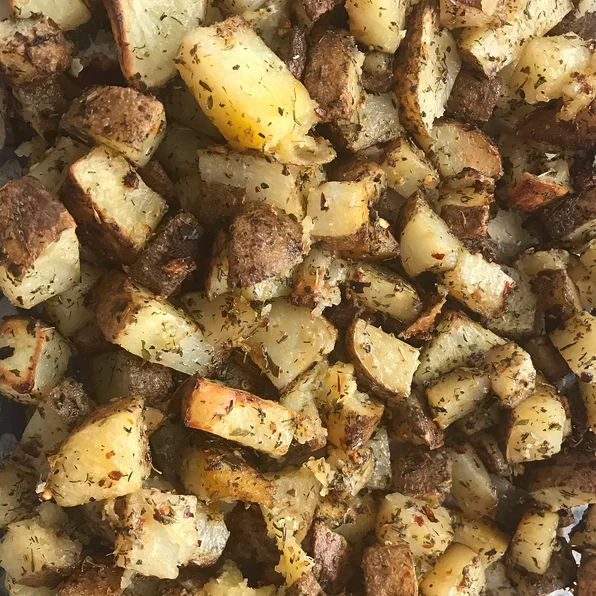

Oven Roasted Potatoes

Descrição
A great roasted potato side dish made with olive oil and herbs.
Ingredientes
- ⅛ cup olive oil
- 1 tablespoon minced garlic
- ½ teaspoon dried basil
- ½ teaspoon dried marjoram
- ½ teaspoon dried dill weed
- ½ teaspoon dried thyme
- ½ teaspoon dried oregano
- ½ teaspoon dried parsley
- ½ teaspoon crushed red pepper flakes
- ½ teaspoon salt
- 4 large potatoes, peeled and cubed
Passo a passo
- Place green beans into a large skillet and cover with water; bring to a boil. Reduce heat to medium-low and simmer until beans start to soften, about 5 minutes. Drain water. Add butter to green beans; cook and stir until butter is melted, 2 to 3 minutes.
- Cook and stir garlic with green beans until garlic is tender and fragrant, 3 to 4 minutes. Season with lemon pepper and salt.